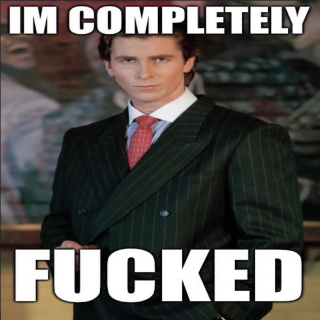

The Death of Sanyang, Part 3
Part 2 can be found here, and part 1 (including an introduction to Over/Under and a guide to key chracters) can be found here.
The office incident
Sam: Secretary Thatch has barricaded herself in her office, with the Local 10th and 11th as guards inside
Alcyone: oh fuck @Maureen Tūī Shouting loudly at the door @Khadijeh Thatch For fuck's sake you can't stay in there forever
At this point I start posting to official-bulletins, treating it as a building wide loudspeaker. This is the only information that the union denizens have.
A giant loudspeaker blares out. Alcyone:"Former Secretary Thatch has gone rogue again. All members of the union, please do not cooperate with this nonsense. I want to resolve it as peacefully as possible. Secretary Thatch, please don't do this. You're going to need food or something eventually, it won't work (Screenshot: Secretary Thatch has barricaded herself in her office, with the Local 10th and 11th as guards inside)
Sam: Shouts return through the door: Just need a little more time! I'll be outta your hair before you know it!
Alcyone: Man is there anything I can do to try and convince the local 10th and 11th to stand down
Maureen: Oh my god.
Alycone: I'm assuming it'll take time to bring others in and I don't want them shooting at each other Can I find the circuit breakers and cut all power to the building in case Thatch is trying to do something electronic @Sam. Like communications or something
Sam: Done.
Sam, in the union hall: The power goes out in the Union Hall—the lights go dark, the music goes quiet.
Maureen: Are the 10th and 11th on the inside or the outside?
Sam: Inside
Maureen: Hrmm.
Alcyone: Going to try calling one of them (say in the 10th) and ask them why they're doing this for Thatch
Maureen: Christ. What do we do. This could go really south.
Alcyone:Another message goes out: "I (Alcyone) cut the power and am trying to negotiate with them" "Maureen is with me too." "We are basically standing around yelling at a door right now" "Do not send in more troops we don't want any bloodshed or confusion. We have contingency plans in place if this goes very wrong"
Sam: The soldier's voice replies: Uhh, uh, she says she has work to do. We didn't quite know what was going on!
Maureen: W-WORK?!? Are... DId we tell the soldier's she's been demoted?
Alcyone: I'm going to say, "She's gone rogue. She's supposed to have stepped down by now. She could be doing real damage to the union. You know I'm the President!"
Maureen: Tell them I'm here too.
Alcyone: "Maureen's here too!" I hand her the phone
Maureen : "YOU NEED TO STAND DOWN NOW AND LEAVE. THERE'S NOBODY ELSE HERE WITH WEAPONS, YOURE NOT IN ANY DANGER"> "Oops, forgot it's a phone! Don't need to yell."
Sam: Thatch's voice replies: Hi ladies! Can you get the computers back on so I can finish up, I'm a little old for this tech.
Alcyone: Absolutely fucking not Thatch!
Maureen: @Sam Am I able to lock the union's funds (until she's out). I'm worried she's wiring all the money somewhere.
Sam: She's not a Boss, currently, so you're chillin
Maureen: Phew.
Alcyone:📣 ok I know this sounds really dire but Thatch is just being really fucking stupid and we seem to have stopped whatever she's up to
Alcyone: (brainstorming here, this is not for Sam yet) I'm guessing trying to break down the door is a bad idea
Alcyone:📣 stupid enough that I might do something really stupid
Maureen: Indeed.
Sam: You could try, but she's got guys with cybernetic guns in there.
Maureen: That too.
Alcyone: I'm not sure she won't kill again That would also rule out trying to find a way in through like the window
Sam: (You've got guys out here with cybernetic guns, too, for what it's worth)
Maureen: By memory, in there anything important in the room she's in? Major computer systems, records, equipment anything I'd think would be a concern?
Sam: Teamsters records, probably, given that she was the Secretary. Nothing you don't have copies of, though.
Alcyone: What if we try calling different soliders simultaneously, Thatch can only take phones from one at a time
Sam: You hear muted sounds, scraping, grunting, odd footsteps.
Alcyone: I guess I'm assuming I can contact them individually
Sam: You can, yeah.
Alcyone: ok @Maureen you call someone in #10, I'll do #11. At the same time, 1, 2, 3.
Maureen: Calling!
Alcyone: :phone: Thatch has gone rogue, she's no longer secretary, I'm the president, I need you to stand down
Maureen: Stand down, open the doors and leave! We're unarmed, you won't be harmed!
Sam: You hear a soldier's voice call this time: Hang on a minute, she's just updating our UHN-19542s!
Alcyone: Does that mean anything to us?
Sam: A specific and unusual employee file type, something used mainly to determine cases of uniforms being issued in the wrong sizes.
Alcyone: 📱 Fedor can do that! If Thatch does it it won't be valid and you'll have to do it again! She's no longer secretary!
Sam: A different soldier's voice, in between shuffled papers: Just a little while longer, sorry, now she's working on filling out our SN-992-F forms! (A form used to classify engine subcomponents according to length, width, and thickness, as well as manufacturing materials.)
Alcyone: Thatch what the fuck are you doing in there
Maureen: What the fuck is she doing. Is she.
Alcyone: Ok Maureen I think I might do somethign really stupid
Maureen: Is this, smuggling?
Sam: Another soldier: Real busy, sorry, just working on making sure our R54.7 and R54.11 match the Teamster's Handbook Volume 3! Just another few minutes!
Alcyone: Thatch I am going to force my way in there unarmed. Do yo really want to be known as the person who shot two presidents
Maureen: 📱 Enough of the shit! What's going on in there!
Sam: One of the other soldiers: Just a minute Boss, sorry we're getting there. Almost there, promise! Okay, now, that's the 90T-Alpha, -Bravo, and -Charlie done, just need to sort out -Delta and -Echo. (forms regarding the specific brands of screwdriver, wrench, hammer, saw, and drill that each journeyman is allowed to carry)
Maureen: No. I know what she's doing. She's gathering supplies for a choke expedition
Alcyone why the fuck did she not just say that I am going to find a large object and start making breaking the door down sounds, but not make a serious effort to actually break down the door
Maureen Because she's talked the soldiers into going too.
Sam One of the soldiers yells: Whoa there, Boss, sorry, we're nearly there, just working on the GVO-10s! Another few minutes, sorry!
Alcyone Thatch I am not going to let you do whatever the fuck you're doing. I am going to get in there. I do not believe that my own forces will shoot me. Thatch and if I'm wrong you will have some extremely uncomfortable conversations and nobody will believe you
Maureen : AL', DONT! she says, playing along.
Sam: Uhhhh, hang on please! If you can! We're nearly done here!
Alcyone: I am not hanging on I do not trust you one bit bang, bang, clang
Maureen: I need to review the building map. Are there any other exits to the room?
Sam: There's a little window that looks over the union hall, but that'd be obvious if it opened. Otherwise there's no entrances or exits, I guess other than like maintenance vents and such
Alcyone: actually you know what I will go into an adjoining room and see if I can get in via maintenance vent
Maureen: I don't know if that's the best idea! Do we have a camera or something we can send?
Sam: You can get a little camera drone in there, sure
Maureen: Let's do that instead. I dont care if it's loud.
We learn what happened in the office
Sam: It takes a few minutes, but your drone buzzes up into the vents and gets a clear view: twenty Local soldiers, kitted out in cybernetics, sitting around. Four or five stand near the door holding stacks of paperwork and quietly giggling to themselves, the rest sit around playing cards or sharing from somebody's flask.
Maureen Where is Thatch.
Sam No sign of her.
Alcyone FUCK
Alcyone going to call all remaining security forces in the area to look out for Thatch and arrest her if possible
📣 Thatch has escaped. If anyone sees her, arrest her, without violence. 📣 Thatch you have my number. Please just explain what you're doing. I'm sure we can talk it out.
Sam: One of the soldiers—who you can see live—shouts through the door, reading off the manual: Just another minute or two! We're working through the 22-85-Zetas now! Nearly there!
Alcyone I don't know what else to do what ws she even doing there
Maureen It was a distraction. She's made a run for it. Probably for the choke I assume.
Alcyone why did she have to make a run for it! She could have just left!
We then have a discussion where we check for missing supplies (no equipment missing), lock down the building, and kick Thatch out of the union (slightly before the vote ends, but it was strongly trending that way). We learn the vents are too complicated to track her down in.
We then remember we need to get the soldiers out of the room
Maureen: 📱 WE KNOW SHES NOT IN THERE.
Sam: There's a long pause. A soldier calls back: You sure about that?
Maureen: 🤦♀️ Who hired these guys.... ((Us))
Sam: You hear some murmured voices, then the door unlocks. The sergeants of the squads salute.
Alcyone: what the fuck was that
Sam: There's a lot of shuffling, sheepish looks, and staring at their boots. "Didn't understand what was going on, President, ma'am."
Maureen: I hold up a shot form the drone's camera feed. Spill. Now.
Sam: "Well, ah, Thatch ordered us in here and told us to shut the door, said that she just needed a little more time. Ordered us to bar the door and stall for time, so we followed orders."
Maureen: Do you live under a rock. You realise she was demoted.
Alcyone: Did she give any further indication of what she was doing, such that it seemed like a good idea to take orders from her, and not us By the way the adjudicator [Bratva boss] just called, I'm on the phone with her She says she knows somethign about what's going on
Sam: "Well, ma'ams, respectfully, we, ah, we weren't entirely sure. But Secretary—er, former Secretary, ma'am—she can be quite persuasive. Forceful, ma'am."
A Surprising Phone Call
Adjudicator Jess then calls Alcyone, saying she has info on Thatch. She says she is not offering to kill Thatch, but is willing to make a trade:
[On the phone, i.e. in another thread]
Jess: I want you to know that I believe you when you say you aren't interested in war. But I don't know if your Teamsters believe me when I say the same thing. If I can help you polish off this particular ziti, what can you do for me to help them believe it? To be clear, I am not threatening the former Secretary's life. Though if you choose to, that's up to you. But I do know where she is. And all I want to know in return for that information is what you're going to tell your Teamsters about how helpful the Bratva was in solving this issue. There is no other price tag, @President Alcyone 🟥🧹. Just your honest attempt to demonstrate the Bratva's goodwill to your Teamstersshe is contacting me on an attempted escape from your HQ. And I will give you every bit of information and evidence about that. And what I really want, more than anything, is for your Teamsters to know she offered me 30mcr and I said no, because peace was more important to me I could transmit the record of Thatch and I's conversation directly to the news. But I want to know that you'd have my back. (Or, that you have a better idea for building their trust in my word.
Alcyone: First I'll send you a copy of this conversation which I think you need to see
Maureen: We're not killing thatch!
Alcyone: no we're not but why did the adjudicator call me and offer! She knows something!
Maureen: The walls have eyes! the whole union is buzzing about this! Someone told her! She's looking for easy easy favours with us.
We then extensively argue about what to do about the Adjudicator's offer.
Back on the phone:
Jess: ((Oh don't worry, you're Union, I know that you're arguing with another Union member))
Alcyone: hmm, at the very least Thatch lied to you - at this point I'm more likely to think Thatch lied than you did - she did not take 30mcr.
My sticking point is I absolutely do not want to make a deal with Bratva: partly because it would be political suicide, partly because it is very late and I don't want to find some trap I wasn't expecting.
At some point we ask Sam about if Thatch stole money and we learn that despite our initial first check, Thatch took out 30 mcr recently.
I decide that there is no downside to freely giving Bratva what they want, though. I'll do that as a gesture of good faith. I hope they will then decide to give us more information, but if not, oh well.
Alcyone: 1. I will tell the union that Thatch stole 30 million credits and that I only found out because she went to Bratva with them and Bratva told us. Not as part of a deal though.
Jess: For what it's worth, if she didn't actually steal 30 mil, I am not asking you to lie.
Alcyone: She did, we made a mistake with our accounting the first time
Jess: ... Ok.
[Note that part of the accounting error is that we move a lot of money for anyone who does business with the ports, a lot more money than we personally own, but also I didn't realize how relatively rich we were at this point.]
Alcyone I'll just say it. I don't need anything in exchange. If you want to share more info you can, but there is no obligation on either side.
Jess: Hm. I appreciate it, Ms. President. I apologize if I have been a bit hard-line about this. It is late where I am, and I am used to needing assurances, especially when dealing with the Union. I will be transmitting the information momentarily.
Alcyone: @Maureen Tūī, 32819L Treasurer 🟥 I think I will regardless tell the union that she stole 30 million credits and that I only found out because Bratva came to us. I think we should say that anyway
Maureen: Yes. Please be restrained in your phrasing. I don't want to set off a whole thing.
Alcyone: Would it be fair to say that 30 million missing is not something people need to panic about? Like obviously it is bad
Maureen: It's bad, but we know where it is.
An even more surprising phone call phone call
Jess patches me in to the other line. Note that I don't get patched in until pretty late in this conversation, where indicated.
Sam: @Adjudicator Jess Levine 🔗 Your PDA pings awake for comms. It's @Khadijeh Thatch on the other end, sounding oddly muffled.
Thatch: Heeeeey there,
Jess: Oh. Hello Secretary. I have to admit, not a call that I expected. Or, wait, it appears I may be using that title in error now, yes?
Thatch: Yeah, oh, huh. Hocus pocus. So, I'm in the vents at Local HQ. If I find a way out, could I get a pickup? Like, a Bratva, pickup? I'll owe you. ....More.
Jess: I... Thatch, I think I have a simple question for you. Why would this be a good idea?
Thatch: (Clothes rustling.) There's something buzzing in here. If it's a drone that i requisitioned, I'm gonna be so mad. Oh. Right. Well, I won't fib anymore, it would not be helpful to you, not immediately. But I took 30mcr. I was trying to push my restoration initiatives when they cut me off.
I've got cross-faction connections with deep loyalty. You guys have made some big changes lately, and I'm trying to make some myself. I want to.... that is a scary noise, let's go this way instead. I want to help fix things up around here, even if they don't want me doing it from my office. That's a lot of vagueries, sorry. I mean I want to drop cash and manpower on helping people, and I have both, just not Union-affiliated anymore. I was down there yesterday, Jess. I saw it all myself.
Jess After some time and much discussion, the Adjudicator uncovers the receiver on the comm, and replies. An honorable goal, Thatch, and one we share. You know better than anyone that the Bratva is both able and willing to drop cash to helping people. But as you also know better than most, there is rarely a price tag on preventing war, and in our current situation...as a former market reporter, it seems the going rate for preventing invoking the ire of the Union mob is...about 30.1mcr.
Genuinely, I wish we could help you. And that you could help us help the Dream. But we can't do that if some Union hothead sees a leak of you in the Family and decides that's the last straw, and points the shotgun down at their own two feet for the eightieth time. I'm afraid you've made your ziti, ex-Secretary, and you're going to have to lie in it.
Give Tempest a call. Perhaps it would be less politically fraught for them to take you in.
Thatch: Oh, I don't want a free pass into the Family! I just need a cab ((or in-universe equivalent)) or something when I hit the curb! Have some newbie with no rep show up, drop me off a few blocks away, and you'll never regret it for a second. ((Juicy drama!))
Thatch: I met Sanyang's daughter, goddammit! I need to get to the Heimlich! ((Various whisphered expletives.))
Jess: Stay on this line, Thatch. Can you transmit your location?
Thatch: Yes, HQ is at 01.07. ((I would just about die if you assassinated me))
[[note this is EXTREMELY classified information, though Bratva had the means to get it anyway]]
Jess: Hold on just a bit longer.
Thatch: Caaan do. God am I lucky you were awake.
Jess: @Khadijeh Thatch Are you still at the coordinates you gave me? If so, someone will be en route momentarily.
Thatch: Yep. Surprised they haven't found me. ((Perhaps looking out at the street from a grate, or hiding behind a dumpster, or smth))
Jess: Transmits the coordinates and description of the hiding place to @President Alcyone 🟥🧹 and @Maureen Tūī, 32819L Treasurer 🟥, then silently patches them into the comm line.
Hang tight Thatch, we're almost there. Just stay put.
Alcyone: @Sam I know you went to bed but when you wake up I would like to arrest Thatch.
Thatch: 
Maureen: WITHOUT GUNS WITHOUT GUNS
I then send a private message to Sam in my presidential channel
@Sam in addition to arresting Thatch, I would like to (if possible) physically take away Thatch's credstick (in the morning)
I make the following announcement to the Union:
Ok, last update. We have learned that Thatch made contact with Bratva and offered them 30 million credits. They pretended to intend to help her, then reached out to us to warn us proactively. They expressed a strong desire to improve relations with the union and avoid any further conflict, and to put this entire episode with Thatch behind them. We then checked our accounts and found that 30 million credits were missing.
We talked for a bit and agreed we were not going to do this with any deals, any contracts, we would just each do what we thought was best for the station. Bratva then gave us Thatch's hiding place and ((pending Sam waking up)) we arrested Thatch.
With that, the ongoing tensions with Bratva were more or less resolved. I still wasn't sure about Sylvana, but with Jess in charge as well, it seemed to me we could trust them.
The aftermath
Sam then opens an interrogation room with Thatch, Fedor, Maureen and I. For a while, Thatch says nothing.
Maureen: I know how to make her talk... reaches into a duffel bag pulls out a tray of ziti
Fedor: Didn't think we'd be pulling out the big guns yet...but she's playing tough.
Later on, we had a discussion about this. Maureen wanted to be merciful, reasonable moderate Fedor wanted a firing squad. In the end we settled on giving Thatch what she seemed to want: an opportunity to go fix the choke. But a one-way trip. Thatch said nothing up until this point, being well aware it seems of what you should do when arrested.
Alcyone: So we're going to start small, but with peace established, a good number of our soldiers want to help with the humanitarian mission to the Choke. They're going to go with you. They've packed all the equipment you'll need, and they'll rotate in and out, so they'll be able to bring you more supplies. You'll be as safe as it's possible to be there. They can contact other members of the Choke team for you. You're going to get your chance to devote your life to fixing the Choke. But while they'll be coming in and out, for you it's a one way trip, until the day the Choke is no more. No credstick, no pass to get back, all communications go through someone we trust. No more schemes or lies or treachery. Good luck, Thatch. I hope you can redeem yourself down there. I hope you can find a way to become the person so many of your Union comrades believed you to be when they put their faith in you. She nods at the security forces. You can take her now.
Thatch So i tried to leave after getting nothing done, you're imprisoning me for life. I thought the vote on allowing me to stay in the Union succeeded?
Alcyone: I'm sorry to say that the results changed dramatically after you stole 30 million credits and tried to work with Bratva. I will say that we had a long discussion about options but Maureen convinced us to go with the merciful option. This was the merciful option. also, we hope to end the Choke in your lifetime so it's not imprisonment for life. plus, you know, the choke is very large. I'm sure you'll be able to get up to all sorts of stuff in there.
Thatch Wait a day before I down. Keep a gun to my head for all I care. I want to say my goodbyes.
Alcyone We've waited too many days.
Thatch (probably suddenly straining against my shackles or something) You don't know what's down there. I do. I demand to kiss my fucking husband and hug my kids before I get pulled apart like jerky by a monster. And I know this is multiple lifetimes of work, unless ending the Choke is all the Local does for a generation. Fuck the train, Tui, come down with me.
Alcyone People get sent down there all the time for nothing other than not having enough money. You'll be better off than all of them.
Thatch We send them down! And I saw them piled in rotting heaps! They die the same day! Sure, I'll have my widdle squad. but we made things down there mad! Why do you think I was preparing so damn much?
Alcyone You said you wanted this, many times
Thatch Yeah! I did! A very specific and prepared way! Thatch pries out a molar and puts it on the table. It has an unscrewable cap and a little barcode. Give me one million credits and 12 hours. If I can salvage even 1/30th of the plan, I'll have much more of the Choke oxygenated before I croak. We were using the entrance at 10.20. I need to talk to a cowboy, a tempest, my husband, the old lady, and some others if I have time. Keep ten guns pointed to my head or something. Personally approve each step I take. Follow me around, even. But I have house calls to make. I have people who need me. People who have asked to see me, to help me, even to go down with me. She taps the molar. That's the switch, to my fucking pacemaker! If I'm not down there by 3PM tomorrow, hit it. You can even have a little taste right now if you don't believe me.
Maureen Maureen enters the room, and eyeballs Thatch. Ah. Thatch. Glad to see you talking. What do you think, Alcyone?
Alcyone We have given you more time over and over and over again, and each time it has been nothing but an opportunity for some new scheme or trick. We have been doing basically this, having basically this conversation for days. I have offered a lot of trust. I have offered a lot of opportunities for you to make it right, to try and salvage some sense of basic decency. And each time my trust has been misplaced. I was willing to give a second chance. And then a third. But at a certain point - We're past that point. Thatch, it's done. Be glad it's not an execution, because that came up again. You're lucky Fedor is asleep.
Maureen Maureen goes to say something, then stops herself.
Thatch Go on.
Maureen We- We'll do something. Not now. Things are barely stable as-is. We can't help the choke if halfway through we fall straight back into war. But... She sighs After the train system is complete. It will be my priority. If you're crazy enough to do shit like this, I'm sure somewhere in that mix of bad decisions you made, there's something important. And I'm sure others in the union hold that sentiment too. But. Right now. They are not happy with you. If we give you any sort of concession for this with the climate as it is, they've vote us out, and then it'll never happen. Does that makes sense?
Thatch Perfect sense. You’re image-obsessed, and pointing at Alcyone you’re insane.
Alcyone I'm giving you a much better deal than you gave Sanyang, Thatch.
Thatch Execute me? For nonviolently crawling away? Why was that ever on the table? Killing me wasn’t in the question when it was a “heated security standoff”, it wasn’t when I called a hitman, but now that I embezzled and ran to go help the needy? You’re a madwoman!
Alcyone I think it's more that every action you have taken throws into doubt the idea that the murder was a well thought out, justifiable idea, with no other options.
Thatch I feel like people forget the main reason why I killed her. We still remember the whole squad sweep thing, yes?
[note: it was later determiend that didn't happen]
Alcyone Yes, I do. What she did was also a big problem. Both of you are not so different, in many ways. Different ideologies but the same methods.
Thatch It’s how we take care of our own, Alcyone. Even Sanyang understood it for a while.
Alcyone I want you to go to the Choke because you clearly are going to cause endless problems for everyone around you as long as you are here.
Thatch You’re right, Sanyang was a “kill hundreds” sort of girl, I fancy myself a “kill one to save hundreds” sort.
Alcyone If you don't want to go to the Choke then you can go off station and never come back. That's the one other offer I'll give you. But it's happening today.
We then had an OOC discussion. While it makes sense in character for my character to want revenge, I decided I was getting too heated out of character, and the game was about over. She didn't get exiled mechanically, just in fiction, and makes one last video statement:
Former Secretary Khadijeh Thatch sits at her desk. There's nothing on it anymore.
I killed President Sanyang. There was no security standoff. I let an assassin inside, and looked away as it happened. Yes, a Bratva one, but that doesn't matter. What reason have I to lie now?
I first decided it had to be done when she talked to my subordinate like she was inhuman trash. What do you want from me, I'm a bitter old woman, I care about respect. It's my job to look after my Teamsters. I settled on the "I stopped her from starting war" lie mere minutes before she showed us the Tempest contract. So no, she didn't really try to send a wave of soldiers marching and killing, but I honestly think she might have soon.
She was a fire, with all the good and bad inherent to that. So I put her out, and suffocated in the resulting smoke. I've spent almost 2 weeks dragging her name through the mud to cover my tracks. Funny how things only really fell apart when I tried to help people.
My former peers would rather you get from A to B faster up here, than face the death and horror we perpetuate every day down there. I was like you once- it used to be just a fact of life. Don't go broke or you Choke, pay up, the taxman cometh, and so on. But once you've actually been there, you understand. We decided this place wasn't bad enough and let half of it rot into Hell.
I'm going back down soon to start some attempt at restoration. It will never be complete, but I should feel right at home. It's not that different. Over, under, it's always the same no matter where you go: monsters and filth. I wonder which one I am.
Post game, I found out that the screenshot where Sanyang appeared to unilaterally start a war was fake.
Thoughts on the ending
For unrelated but convenient reasons, I took some time off work towards the end. I ended up spending about four consecutive days entirely inhabiting the headspace of the cold, ruthless Alcyone, a weird place to be. She was objectively pretty horrible to Thatch, and it was hard as a player to not feel anything about Thatch's (in character) begging for mercy. In real life, I don't believe in an eye for an eye, but in games I tend to get very aggressively goal-oriented, even (or maybe especially) in games where you invent your own goals. The amount of power I suddeenly found myself holding was a strange psychological experience - I had never really gained significant power like that IRL, and it was very tempting (especially in a game world where nothing was real) to be corrupted by it. I had to consciously remind myself of the limits I had previously set. I was also effectively being a cop, which is also a weird headspace to inhabit for me personally.
I literally woke up in the middle of the night and opened discord and said to Thatch - OOC am I being unreasonable? Because it didn't occur to me till then. We'd had OOC checkins, and mods had been clsoely watching (and eating popcorn) the entire time, but nothing around the really big topic we were circling around to that point.
Within the game, putting that aside, it was too late for revenge. It was quickly clear Bratva was pretty enthusiastic about the hit and apparently we never even paid for it, it was clear they were as responsible as Thatch, but it would have ruined a lot of people's fun to start a war at that point. Tempest was not on board and the Church was paying Tempest off to be a peacekeeping force between us and Bratva. My possible accomplice the space pope was busy with his win condition and I was busy helping him. I aslo didn't expect Maureen's imaginary moral authority to have as much sway on me as it did. But she deserved her train. And then of course there is the fact that once I became President I had access to classified info that suggested we were never in danger to begin with, that Bratva probably had more to fear from us than us from them.
But in letting revenge go, I felt like I was letting down the sub-faction that had got me elected, the one who I felt held my real, secret victory condition. And I knew that the ghost of Sanyang knew there were never any consequences for her killer - not even having to step down as secretary, till the very end.
I really wanted to get some sort of revenge for The Story, but I was playing out a different story than everyone else. People wanted a wholesome escape from reality - even tylerb at the end, when he went to beefstink's wedding, said this game ended up being a comedy, and a comedy should end with a wedding. I and Thatch and a handful of others were, in the middle of all of this, playing some sort of mix between a cold war spy thriller and a noir detective novel. Though given that, I think the ending I got was appropriate - justice was never possible, and I had to fight like hell to get something resembling the truth.